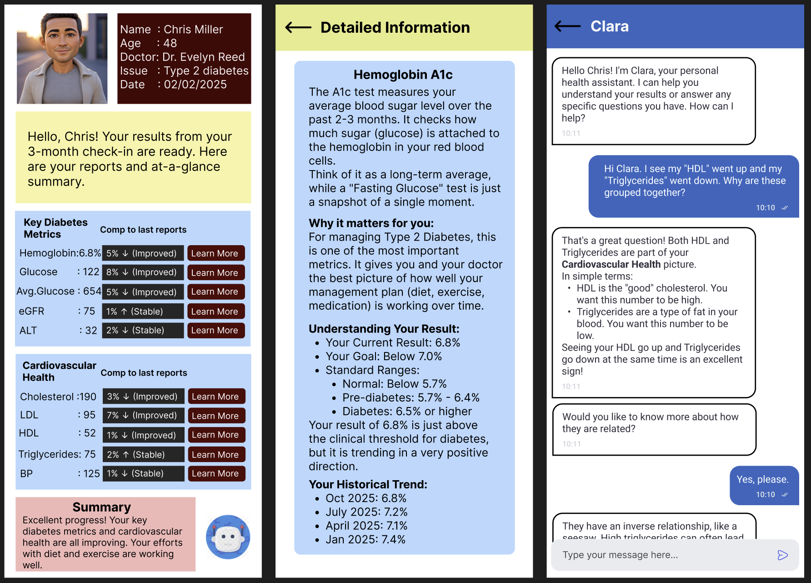

My Health Story
Overview
Patients receive critical health data in formats (typically PDFs) that are dense, full of medical jargon, and lack historical context. This project redesigns the medical report experience to empower patients by transforming confusing data into a personal, intuitive, and understandable health narrative.
My Role: UX/UI Designer
Timeline: 6 Weeks
Tools: Figma, FigJam, Google Forms
Process: Empathize -> Define -> Ideate -> Prototype -> Test

The Problem
For millions of patients, receiving lab results is a confusing and anxious experience. They are often given a static PDF filled with medical jargon, acronyms, and a wall of numbers. There is no context, no clear explanation, and no easy way to track progress over time. This design creates a barrier to understanding, leaving patients feeling disempowered and dependent on their doctor for every explanation.
The Solution
"My Health Story" is a mobile application concept that reframes lab results. It translates complex medical data into a simple, visual, and understandable experience. The app provides plain-language summaries, visualizes health trends over time, and allows users to explore their data, empowering them to become active participants in their own health journey.
Phase 1: Empathize - Understanding the User
Before I could design a solution, I had to understand the real-world frustrations of the people receiving this data. I conducted user research to build a foundation of empathy, which led to the creation of three distinct personas.
User Research
I started with 5 user interviews with individuals who regularly manage a chronic condition. Key insights included:
- Users felt "data rich but information poor."
- The most important thing was seeing trends over time, not a single data point.
- "Normal" ranges on reports felt absolute and scary if a result was barely outside the line.
User Personas
These personas represent the key user groups and their conflicting needs:
- John (The Time-Crunched Businessman): "I’m busy. I just want to know if I'm okay or not in 10 seconds."
- Chris (The Motivated Manager): "I'm putting in the work. I just wish my data would tell me if it's working."
- Reena (The Detail-Oriented Developer): "My doctor only talks about my iron. I want to know what everything else on this report means."


Phase 2: Define - Focusing the Problem
With a clear understanding of the users, I mapped out their current experience and synthesized their needs into actionable problem statements.
User Journey Maps
I mapped the typical, frustrating journey for each persona. This revealed key moments of failure in the current system:
- John's journey showed a need for a scannable, mobile-first summary.
- Chris's journey highlighted the frustration of not being able to compare his current results to previous ones.
- Reena's journey exposed a dead-end when it came to understanding the data, forcing her to Google complex medical terms.


Problem Statements
These user needs became the guiding principles for my design:
- For John: He needs a way to get quick, clear insights from his results on his own schedule.
- For Chris: He needs a way to easily compare lab results over time to see if his efforts are making an impact.
- For Reena: She needs a way to understand the meaning behind all the numbers in her report, not just the highlights.
Phase 3: Ideate & Prototype - Building the Solution
I progressed from brainstorming to building, letting my research guide the design.
Low-Fidelity Sketches
I started with rapid paper sketches to explore different layouts. This helped me establish a clear information hierarchy, balancing the needs of all three personas: a summary at the top (for John) with detailed cards below (for Chris and Reena).

Digital Wireframes
I translated these sketches into digital wireframes in Figma. This blueprint focused on structure and flow, establishing the core components: a summary card, grouped metric cards, "Learn More" buttons, and a chatbot for support.

Phase 4: Test & Refine - Validating the Design
A design is just an assumption until it's tested. I created a high-fidelity, interactive prototype in Figma and conducted a moderated usability study with 5 participants who matched my personas.
Usability Test Findings
The tests provided critical insights for refinement:
- Finding 1: Users loved the "Key Takeaways" summary card, but the initial wording was generic. They wanted it to be more personal and encouraging.
- Finding 2: The "Learn More" button was a huge success. Every user understood its purpose and found it valuable.
- Finding 3: The chatbot icon was initially too prominent, making some users think it was the only way to get help.
Key Refinements
Based on this feedback, I iterated on the design to create the final version:
- Refinement 1: I rewrote the summary text to be more direct and encouraging, using phrases like "Great work, Chris!" to build a positive tone.
- Refinement 2: I made the chatbot icon smaller and moved it to the bottom corner, clarifying that it was a supportive, secondary tool.
- Refinement 3: I populated the "Detailed Information" screen with a clear historical trend graph, a feature users loved.
The Final Solution
The final high-fidelity design solves the core frustrations of our personas in a single, cohesive experience.
1. Home Page (The "At-a-Glance" Dashboard)
This is the first screen a user sees. It immediately provides a "bottom-line" summary for John, while the color-coded trend data (e.g., "5% ↓ Improved") gives Chris the instant validation he craves.
2. "Learn More" Screen (The "Deep Dive")
When a user like Reena taps "Learn More," they are taken to a dedicated screen. This page provides a plain-language explanation of the metric, what it's for, and a detailed historical graph, fulfilling her need for complete understanding.
3. "Clara" the Chatbot (The "Support System")
For any question the UI doesn't proactively answer (e.g., "How are HDL and Triglycerides related?"), the chatbot "Clara" is available. It acts as an intelligent assistant to help users get specific answers without leaving the app.
Conclusion
Project Learnings
This project was a fantastic lesson in the power of persona-driven design. The challenge of balancing the conflicting needs of John (speed), Chris (trends), and Reena (detail) forced me to create a more robust and flexible design. It showed me that by designing for the extremes, you create a better, more inclusive product for everyone.
Check out the working model here: My Health Story
Next Steps
If I were to continue this project, my next steps would be:
- Accessibility Audit: Conduct a full accessibility review to ensure the design is usable for people with visual impairments (e.g., color blindness, low vision).
- Doctor-Facing Portal: Design the "other side" of the application, creating a tool for doctors to write and send these simplified summaries to their patients.
- Data Integration: Explore the technical feasibility and security requirements for integrating with real patient portals.